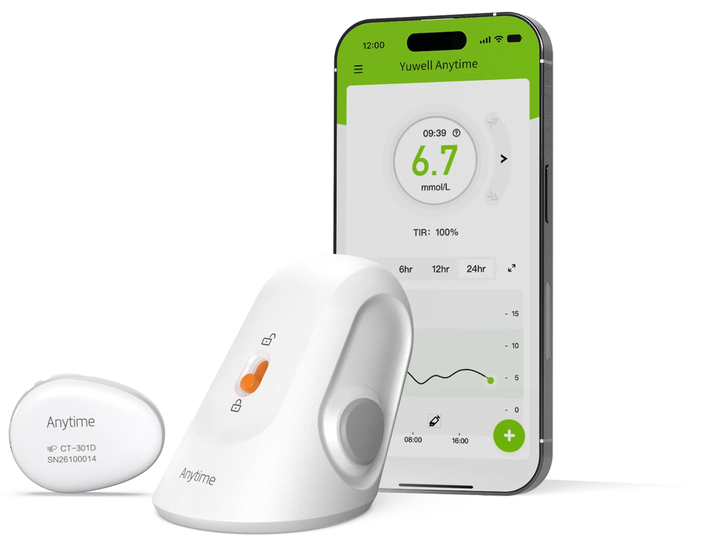

CGM

Yuwell · Continuous glucose monitoring
Yuwell Anytime CT3 CGM
14-day continuous glucose monitoring with a reusable transmitter, connected app and real-time trend visibility.
Price on requestCheck availability